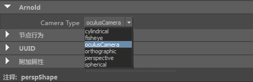

要将摄影机集成到 MtoA 中，我们需要创建一个模板和一个元数据文件，并将它们复制到 MtoA 安装目录中的正确文件夹。
要添加元数据信息，您必须将以下内容写入 oculusCamera.mtd 文件。
oculusCamera.mtd
# oculusCamera 0x00070007
[node oculusCamera]
maya.name STRING "camera"
maya.id INT 0x00070007
maya.translator STRING "oculusCamera" 然后，将此文件和“oculusCamera.dll”文件放在此文件夹中：%MTOA_PATH%\shaders\
现在，您需要为此摄影机创建 Maya 模板。
在 MTOA_PATH\scripts\mtoa\ui\ae\ 中或在 MTOA_TEMPLATES_PATH 中定义的任意文件夹中创建 aiOculusCameraTemplate.py 文件
aiOculusCameraTemplate.py
import mtoa.ui.ae.templates as templates
class aiOculusCameraTemplate(templates.AttributeTemplate):
def setup(self):
pass
templates.registerTranslatorUI(aiOculusCameraTemplate, "camera", "oculusCamera") 现在，在 Maya 中，您将可以选择“oculusCamera”作为其中一个摄影机转换器。
